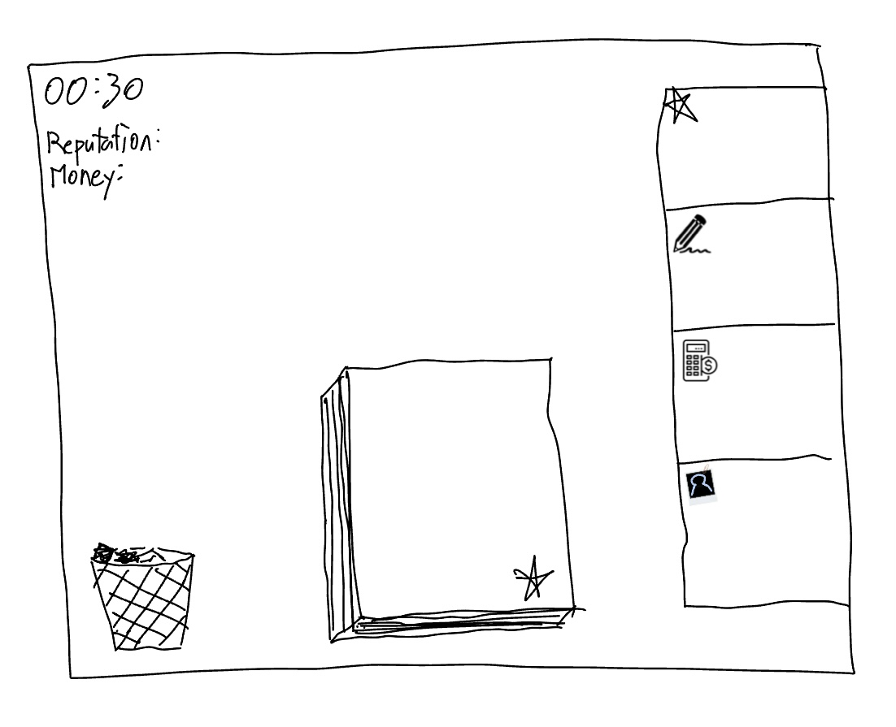
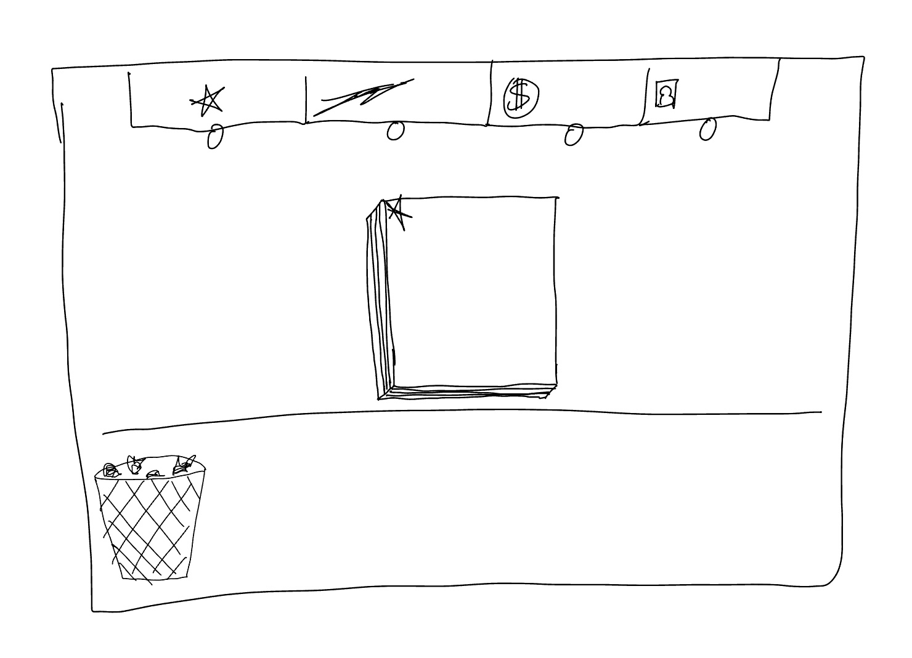

Minigame design
I developed rules, objectives, interaction flows, and wireframes, connecting office tasks to the game’s characters and daily routine.
2D Adventure / Visual Novel
Turning everyday office work into quick, playful challenges in a corporate espionage adventure.
Set in Osaka in the winter of 1992, Japanese Salaryman follows Issei Ito, a security specialist investigating a spy inside METTA. Office relationships and everyday tasks fill the day; strategic hacking takes over at night.
I designed daytime office minigames, turning routine work into fast-paced challenges that fit the game’s satirical tone. I wanted these moments to give players a playful break between heavier story scenes while keeping them immersed in office life.
My contribution focused on the office activities players encounter during the day.
I developed rules, objectives, interaction flows, and wireframes, connecting office tasks to the game’s characters and daily routine.
I worked with a programmer to turn the designs into playable Unity prototypes and refine how each activity felt to play.
I used internal playtest feedback to refine instructions, difficulty, and pacing, aiming to keep the minigames approachable without becoming repetitive.
The systems, decisions, and feedback that shape the player experience.
A timed file-sorting challenge built around quick pattern recognition and decisions. I designed it to turn the pressure of office paperwork into a focused, arcade-style task.
I explored placing the sorting categories beside and above the documents.


An Overcooked-inspired coffee-making minigame focused on multitasking and timing. I wanted the rhythm of preparing coffee to create a playful rush within the daily office routine.
Early sketches explore ingredient placement, hover information, and movement between workstations.